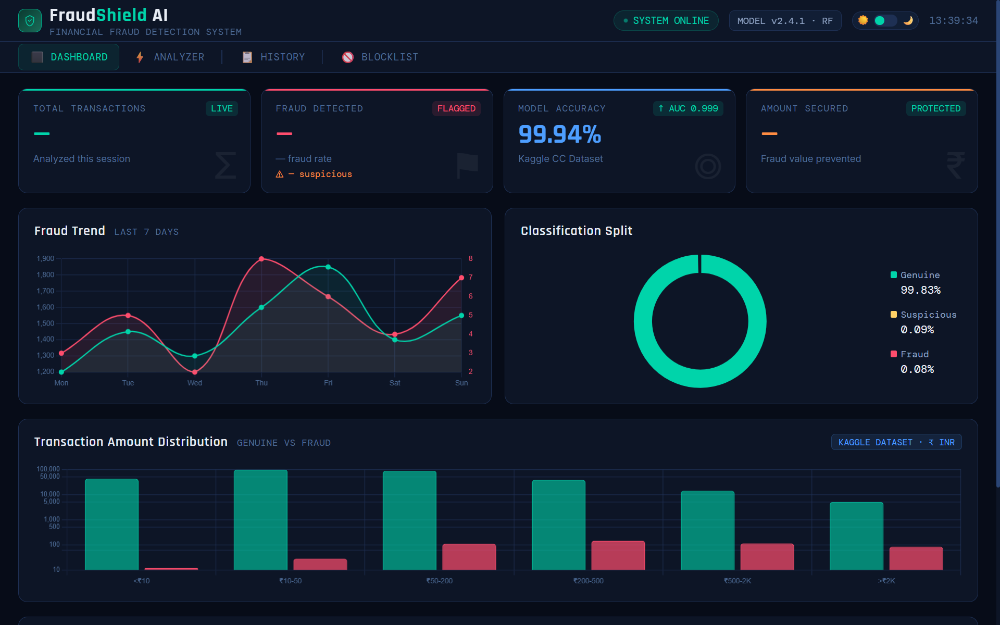

Hello, I'm
Computer Science and Engineering student passionate about software development, problem solving, and building practical applications using Python and web technologies.
I am a Computer Science and Engineering student with an interest in software development, data structures, algorithms, and machine learning. I enjoy learning new technologies and applying programming concepts to build practical projects. I am currently focused on strengthening my problem-solving and software development skills while preparing for opportunities as a software developer.
Python
C
HTML
CSS
JavaScript
MySQL
Git
GitHub
VS Code
Data Structures & Algorithms
Object-Oriented Programming
Machine Learning

A web-based financial fraud detection system that analyzes transactions and uses machine learning to identify potentially fraudulent or suspicious transactions.
Technologies: Python, Flask, Random Forest, Pandas, Scikit-learn, HTML, CSS, JavaScript
Add your second completed project here with a short description of the problem, solution and technologies used.
Technologies: Python, HTML, CSS, JavaScript
Government Engineering College Mosalehosahalli
Hassan, Karnataka, India
Visvesvaraya Technological University
2023 - 2027
I'm open to software development opportunities, collaborations and technical discussions. Feel free to connect with me.